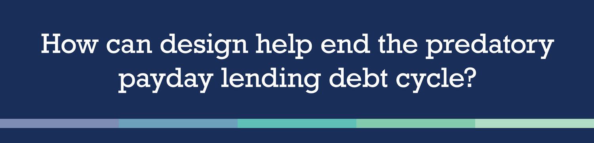

CHEQUE
BFA THESIS PROJECT | FALL 2016-SPRING 2017
BFA THESIS PROJECT
FALL 2016-SPRING 2017

"How can design help end the predatory payday loan debt cycle?"
My BFA design thesis started with this loaded topic and consisted of an app prototype, a motion piece,
and accompanying posters that were exhibited at the Snite Museum of Art. Keep reading to see how I got
there!
On November 4, I presented my research and ideation for my project to the faculty of the Art, Art
History, and Design Department. Upon passing the review and receiving the Grief Award of $600, I was
approved to move on with me thesis. I was then able to begin the fun part- designing! Below is the
timeline that I created to keep myself accountable throughout the year.
NARROWING MY GOALS: BUDGET, PREDICT, BALANCE
I decided to focus on three main purposes for the app— to help individuals budget, predict, and balance
their finances.
BUDGET: My intent for the app is to be an overall budgeting tool for individuals who
have a hard time keeping track of their finances. Users will be able to input their transactions in a
more simple way and can customize their budget towards different areas, such as groceries or
transportation, each month. Through the simple and clear graphics, they will be able to see if they are
overspending in certain areas.
PREDICT: Many budgeting apps look back on ones finances. I wanted this app to look
forward by allowing one to predict the negative effects of payday lending on their current finances.
They can input their intended loan amount, the number of late payments, and the app will predict how
much the loan will end up being, which will allow individuals to directly see how expensive the loan can
be. This forecast tool allows users to plan months ahead and find alternatives to payday lending.
BALANCE: Other features, such as the history tool, will allows users to graph their
current progress and compare their spending habits with previous days, months, and years. They will also
be able to set aside part of their income to go towards savings and debt, allowing them to plan ahead
and take more control of their finances.
MOTION PIECE
I created a motion piece using After Effects to better inform my audience who may not be familiar with
the topic of payday lending, as well as illustrate how the app works.